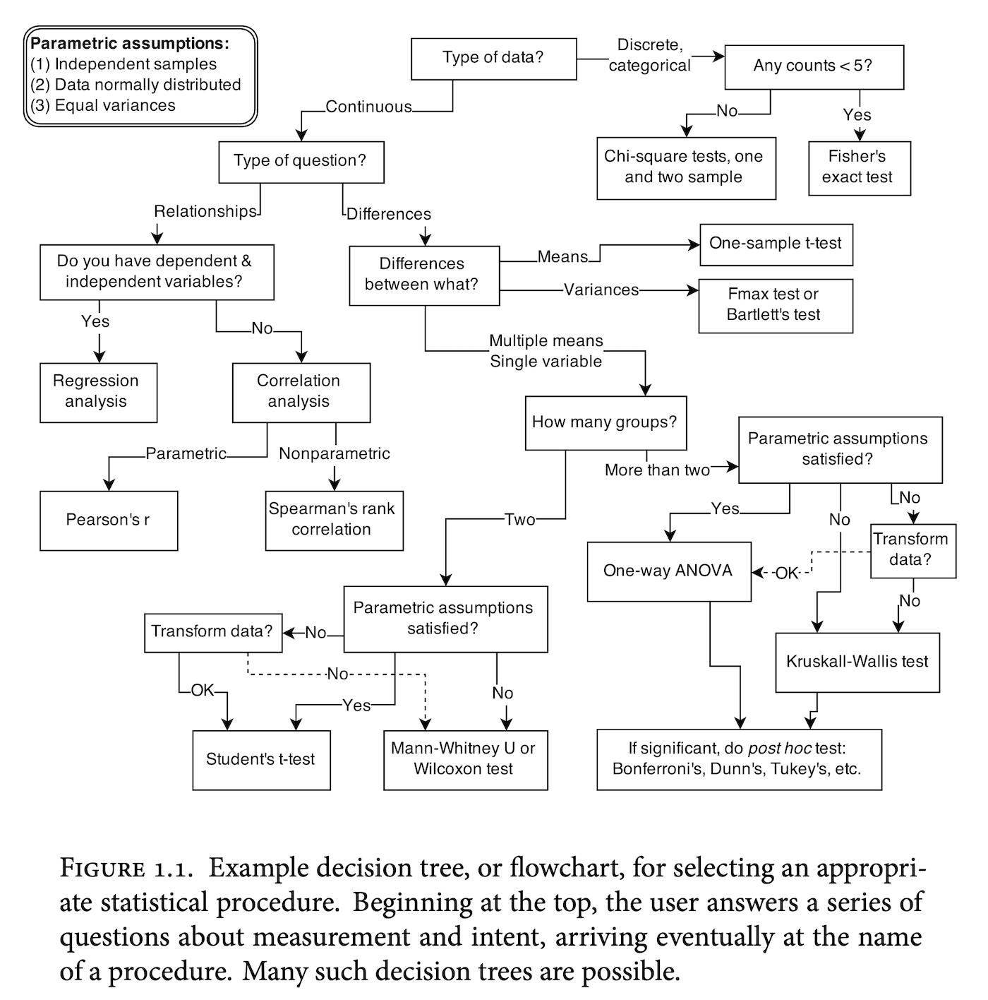

![]()
Here are some recommended writings on statistics and data analysis for the social and behavioral sciences. This blog entry is probably most useful for students, but I also list some more advanced books that might be of interest to others.
tl;dr:
- Regression and other stories (Gelman, Hill, and Vehtari 2020)
- Introduction to Modern Statistics (Çetinkaya-Rundel and Hardin 2021)
- Statistical rethinking: a Bayesian course with examples in R and Stan (McElreath 2020)
- R for Data Science (Wickham, Çetinkaya-Rundel, and Grolemund 2016)
The basics: Regression
If there is one single concept in applied statistics worth learning, it is that of regression. You’ve probably learned statistics in the context of p-values from hypothesis tests, ANOVAs, t-tests and stuff like that, but the underlying and unifying concept is regression: Modelling (a set of) outcome variables on (a set of) predictor variables. ANOVA is a regression model… Assuming that your data is normally distributed can be a regression model… So I’d advise you to just take a moment and learn what this thing called regression is and what it could do for you.
To get started, I recommend taking a look at this book called Regression and other stories (Gelman, Hill, and Vehtari 2020). The book is freely available on the authors’ website (https://avehtari.github.io/ROS-Examples/), and is extremely accessible:
Many textbooks on regression focus on theory and the simplest of examples. Real statistical problems, however, are complex and subtle. This is not a book about the theory of regression. It is a book about how to use regression to solve real problems of comparison, estimation, prediction, and causal inference. It focuses on practical issues such as sample size and missing data and a wide range of goals and techniques. It jumps right in to methods and computer code you can use fresh out of the box.
The quote-unquote downside of this book is that it is a bit heterodox in its approach to statistical inference. I believe this to be an entirely good thing, but the orthodox approach focusing on test statistics, p-values, and hypothesis testing gets a bit less attention in this book than you’d find in those orthodox introductions. In fact this is a reason for recommending this book over alternatives, but it is useful to know this nevertheless.
While we’re at the topic of unorthodox approaches to statistical inference, I’ll mention another book that personally influenced my thinking a lot: Doing Bayesian Data Analysis by John Kruschke (Kruschke 2014). This book includes code examples for conducting bayesian analyses for common scenarios in the behavioral sciences. While much appreciated at the time, modern software options have outpaced those in the book. Nevertheless it is a very well (and whimsically) written book full of educational wisdom, such as “The steps of bayesian data analysis”:
- Identify the data relevant to the research questions. What are the measurement scales of the data? Which data variables are to be predicted, and which data variables are supposed to act as predictors?
- Define a descriptive model for the relevant data. The mathematical form and its parameters should be meaningful and appropriate to the theoretical purposes of the analysis.
- Specify a prior distribution on the parameters. The prior must pass muster with the audience of the analysis, such as skeptical scientists.
- Use Bayesian inference to re-allocate credibility across parameter values. Interpret the posterior distribution with respect to theoretically meaningful issues (assuming that the model is a reasonable description of the data; see next step).
- Check that the posterior predictions mimic the data with reasonable accuracy (i.e., conduct a “posterior predictive check”). If not, then consider a different descriptive model.
Two other books about regression come to mind: Applied Regression Analysis and Generalized Linear Models (Fox 2015) and Serious stats: a guide to advanced statistics for the behavioral sciences (Baguley 2012). Both are very clear in their treatment of foundational concepts and include just the right amount (in my view) of mathematics. The Fox book is used a lot as a textbook for applied stats courses and I quite like it.
Statistical rethinking
This book needs its own heading here, it is just that good.

This book, Statistical rethinking: a Bayesian course with examples in R and Stan (McElreath 2020) essentially argues against a view of statistics visualized as a decision-tree like process above. Instead, it makes the–again–heterodox suggestion that researchers should instead critically think about their research problem and design appropriate models that mathematically represent those problems. It also serves as an excellent textbook on bayesian statistics, which is another term for using the rules of probability to make inferences from data. This is a very good candidate for a second textbook on statistics, once you’ve confirmed with a first book that you indeed ever want to read another book on statistics again!
The author of this book also teaches an amazing course on statistics, and the lectures are all available on YouTube: https://www.youtube.com/playlist?list=PLDcUM9US4XdPz-KxHM4XHt7uUVGWWVSus. Highly recommended.
On that topic–Bayesian statistics–the current “bible” is the third edition of Bayesian Data Analysis by Gelman and colleagues (Gelman et al. 2013). It is also freely available as a PDF on the book’s website: http://www.stat.columbia.edu/~gelman/book/.
Bonus round: Actually doing statistics
For this, you will need to make a computer do stuff. There’s very little to say about this because the 2nd edition of R for Data Science (Wickham, Çetinkaya-Rundel, and Grolemund 2016) just is that good. The (online; free) book takes you by the hand, helps you open up a software suite, and then do magic with it.
Bonus round 2: Multilevel regression
Generalized Linear Mixed Model. Hierarchical models. Hierarchical Bayesian Models. Multilevel models. Random effect models. Models with models in them. It’s just what we do and let’s call it multilevel regression. For most data analysis problems you will likely want to apply some variation of this theme. Actually the book Statistical rethinking above is a great read on this topic, but I thought I would mention Data Analysis Using Regression and Multilevel/Hierarchical Models (Gelman and Hill 2007) because it is a damn good book. The only reason I’m leaving it here and not as the second book on this page is that it is somewhat outdated regarding some of the software presented. The upshot is that a completely revised version of this book should be out sometime soon. Once that happens, this will be up there right after Regression and other stories.
References
Reuse
Citation
@online{vuorre2024,
author = {Vuorre, Matti},
title = {A Simple Statistics Syllabus},
date = {2024-01-19},
url = {https://vuorre.com/posts/statistics-syllabus/},
langid = {en}
}